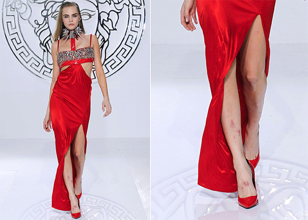
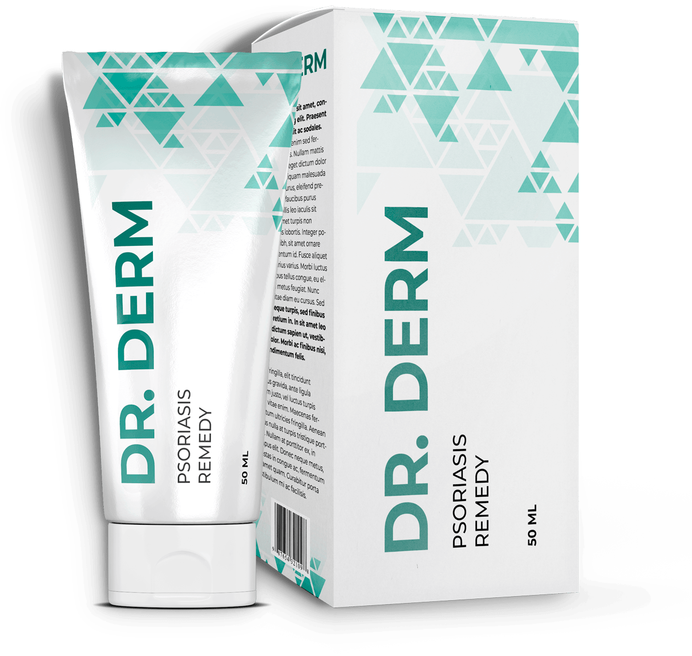
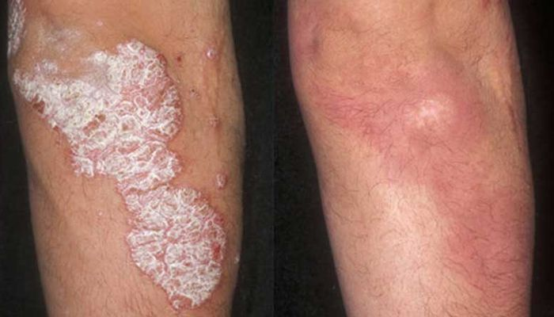

Как звезды лечат псориаз
 На прошлой неделе Международная программа здравоохранения открыла новый проект: “Жить без псориаза”. Амбассадором стала Кара Делевинь – молодая актриса и модель, страдавшая от псориаза.
На прошлой неделе Международная программа здравоохранения открыла новый проект: “Жить без псориаза”. Амбассадором стала Кара Делевинь – молодая актриса и модель, страдавшая от псориаза.
Кара выглядит так, как будто у нее не было ни малейшего намека на псориаз. Ее жизнь – съемки, сцена, откровенные наряды и показы. Она должна быть уверена в своей привлекательности.
Так было не всегда.
Несколько лет назад Каре отказали в главной роли в фильме "Алиса в Стране чудес". У нее обострился псориаз и Тим Бёртон предпочел Каре здоровую Миу Васиковски. Актриса понимала, что псориаз может лишить ее карьеры. Очередной срыв контракта, ухудшение состояния кожи и постоянная боль натолкнули Кару на мысль о запуске собственного средства от псориаза.
“Меня и миллион других людей на земле не могут вылечить врачи. В чем проблема?”
Оказалось, все не так просто как кажется. Обычные средства просто приглушают симптомы, а не лечат. Препараты с сильным эффектом разрушают кожу до нижнего слоя эпидермиса, из-за чего она покрывается отметинами.
Фармакология нуждалась в действенном средстве, которое будет лечить и не травмировать ткани. Кара смогла организовать создание такого средства. Потребовалось восемь лет, чтобы провести исследования, разработать формулу и получить документы.

Все разработки Кара передала в Международную программу здравоохранения. Она объяснила свое решение так: “Предыдущие лекарства оставили на мне шрамы. Я не могу смотреть на других людей и понимать, что мы испытываем одинаковую боль. Мои разработки станут основой проекта “Жить без псориаза”, но ему нужно на что-то существовать. Поэтому было решено отпускать средство по самой минимальной цене. Люди не должны отдавать много денег в клиники и искать особое лечение, когда оно находится у них под рукой. Я горжусь тем, что смогла разработать препарат и навсегда вписать себя в историю медицины”.
Dr. Derm эффективное негормональное средство от псориаза. Он проникает в глубокие слои кожи, рассасывает бляшки и смягчает ткани. Такой способ лечения предотвращает появление рубцов и шрамов. Препарат получил сертификаты качества: Certificate of Suitability, CEP.
Средство Dr. Derm только готовится к запуску первой партии. По этой причине производитель решил сделать скидку в 50% для первых 700 покупателей. Приобрести Dr. Derm можно на официальном сайте производителя.

Комментарии
Как же я счастлива, что снова могу хвастаться своим ножками без псориаза
Я победила псориаз! Мучилась с ним уже лет 5. Спасибо Каре за это чувство здоровья
Раньше у меня псориаз коркой был. Как начинал мокнуть, то все, ничем не лечилось. Начал применять Dr. Derm все прошло буквально за курс
Я с самого детства страдала псориазом. Ничего не помогало. Было обидно, ведь я очень красивая, а как шея или щеки воспалятся, так на меня даже смотреть не хочется. Очень рада, что Каре удалось создать такой препарат. В следующем году я собираюсь поехать на кинофестиваль и взять у нее автограф, она мой кумир!!
Dr. Derm хороший препарат, я пробовал, действительно эффективная вещь
Мне страшно, что у меня опять могут быть рубцы от неправильного лечения. Dr. Derm точно хорош? Его стоит брать?
Однозначно стоит. Я тоже волновался, но потом посоветовался со своим врачом и он подтвердил, что это один из лучших препаратов на современном рынке.